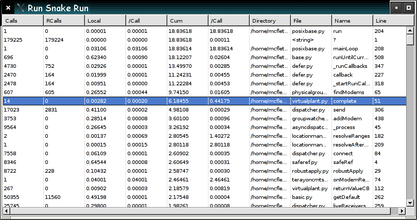

RunSnakeRun is a small GUI utility that allows
you to view (Python) HotShot, cProfile or Profile profiler dumps in a sortable GUI view. It
loads hotshot dumps incrementally in the background so that you can begin
viewing the profile results fairly quickly.
You will require a modern wxPython and Python installation with Numpy/Numeric installed. RunSnakeRun is distributed as a Python distutils package, unpack the source to a temporary directory and run:
python setup.py install
To install the package. You may wish to make a symlink in your /usr/bin or /bin directory to the installed runsnake.py script/module.
To record a hotshot profile of your application:
import hotshot
profiler = hotshot.Profile( "test.profile", lineevents=0 )
command = '''reactor.run()''' # your mainloop call here, this is for a Twisted app...
profiler.runctx( command, globals(), locals())
profiler.close()
Or, to use cProfile:
import cProfile
command = """reactor.run()"""
cProfile.runctx( command, globals(), locals(), filename="OpenGLContext.profile" )
To view the results of your run:
python ../runsnakerun/runsnake.py test.profile
There will be a brief delay as the application is created and begins the loading process, then you should see something like this:

Click on the column titles to sort by that property. As the
loading proceeds the screen will refresh/flash to show the new
data. Very large data-sets can take quite a long time to complete
loading.